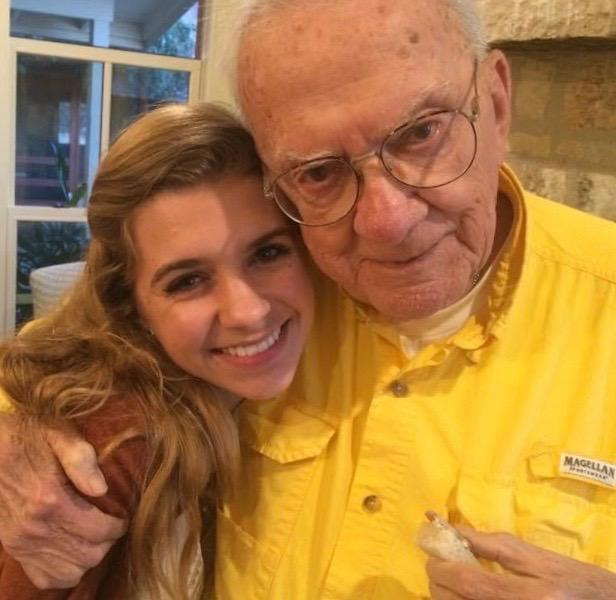

E-SYSTEMS/RAYTHEON RETIREES LUNCH GROUP
By Eileen Wahlstrom
July, August, September, October 2020
Remember
The communities have opened up but the virus is still taking lives with record number of daily cases in some counties. Furr’s has resumed serving but not Buffet style. Our generation is vulnerable so we need to remain as safe as possible. Stay home, if you must go out please continue to practice social distancing of six feet and personal hygiene measures. Wear a mask if you can..
Stay away from the virus of 2020
From Jerry Bryant:
JUST A LITTLE HELPFUL INFORMATION.
STROKE HAS A NEW INDICATOR
They say if you forward this to ten people, you stand a chance of saving one life. Blood Clots/Stroke —They Now Have a Fourth Indicator, The Tongue.
STROKE: Remember the 1st Three Letters….. S. T. R. STROKE IDENTIFICATION:
During a BBQ, Jane stumbled and took a little fall — she assured everyone that she was fine (they offered to call paramedics) she said she had just tripped over a brick because of her new shoes. They got her cleaned up and got her a new plate of food. While she appeared a bit shaken up, Jane went about enjoying herself the rest of the evening. Jane’s husband called later telling everyone that his wife had been taken to the hospital — (at 6:00 p.m. Jane passed away). She had suffered a stroke at the BBQ. Had they known how to identify the signs of a stroke, perhaps Jane would be with us today. Some don’t die. They end up in a helpless, hopeless condition instead. It only takes a minute to read this. A neurologist says that if he can get to a stroke victim within 3 hours he can totally reverse the effects of a stroke…totally. He said the trick was getting a stroke recognized, diagnosed, and then getting the patient medically cared for within 3 hours, which is tough.
RECOGNIZING A STROKE Thank God for the sense to remember the ‘3’ steps, STR. Read and Learn! Sometimes symptoms of a stroke are difficult to identify. Unfortunately, the lack of awareness spells disaster. The stroke victim may suffer severe brain damage when people nearby fail to recognize the symptoms of a stroke.
Now doctors say a bystander can recognize a stroke by asking three simple questions. S* Ask the individual to SMILE. T* Ask the person to TALK and SPEAK A SIMPLE SENTENCE (Coherently) (i.e. Chicken Soup) R* Ask him or her to RAISE BOTH ARMS. If he or she has trouble with ANY ONE of these tasks, call emergency number immediately and describe the symptoms to the dispatcher. New Sign of a Stroke: Stick out Your Tongue. NOTE: Another ‘sign’ of a stroke is this. Ask the person to ‘stick’ out his tongue. If the tongue is ‘crooked’, if it goes to one side or the other, that is also an indication of a stroke. A cardiologist says if everyone who gets this information sends it to 10 people, you can bet that at least one life will be saved.
for more informations on how to identify Strokes Click Here
Present: 0
First Time: 0
Long Time: 0
Guest: 0
SICKNESS:
I pray that none of us retirees have caught the virus. Hopefully, everyone is staying as safe as possible. If you feel sick, please isolate until you know what’s wrong. If you need anything reach out through email, Facebook, phone. We are in this together.
Yvonne McGregor - Yvonne McGregor fell and broke her hip mid September. Caregiver found her on the floor when she came in on Monday morning. She had a partial hip replacement at Medical City in Plano. She was moved to a rehab facility. The Healthcare Resort of Plano, 3325 W. Plano Pkwy, Plano, Tx 75075. Bet she would love to get cards from us. Please add Yvonne and all her family to your prayers.
I have missed my friend Yvonne but have been lax in calling her.
Hope you all are doing well and hope to see you in early December.
Take care of yourself and your family.
Miss you, Vicky Carlson
Update (Oct 20) from Vicki: Yvonne is better. Her spirits are good her daughter said. Still at rehab. Had her up walking with a walker the other day. Short term memory not to good but who’s is these days!
Chris Reynolds – Had her hip replacement surgery March 16th. Had knee replacement surgery August 17th. She has recovered from both and is on the move! Photography abounds on her Facebook page!
George Carlsness: Update on George from Joanne’s Facebook post:
George is up and about and tending to his prayer garden.
7/14/20
Update from George’s surgical oncologist:
"At 3 months past his surgery, George’s CT scan results were good, no sign of tumors. Everything looked good with his digestive system from the surgery. We thank God for this progress and good report. Thank you all for your thoughts, prayers and support for the past 3 months. Please continue to pray for him as he continues the remainder of his chemotherapy. He has completed three treatments and has nine treatments to go, ending sometime near Thanksgiving"
Pat Bryner: Stroke March 12th. Is rehabbing with her daughters up north. You can send Pat a card at this address: 10845 Kingston Ave., Huntington Woods, MI 48070
Bill Bedingfield – He and his adult daughter contracted Covid a few weeks back. She is recovered and back home but he is up and down and still in the hospital. Not doing well. Sharon, his daughter, doesn’t have much hope left. Prayers.
Deaths
Luther Kirk
1956 - 2020
It is always difficult saying goodbye to someone we love and cherish. Family and friends must say goodbye to their beloved Luther Kirk III (Dallas, Texas), who passed away at the age of 63, on October 2, 2020. You can send your sympathy in the guestbook provided and share it with the family. You may also light a candle in honor of Luther Kirk III or send a beautiful flower arrangement to the funeral service.
Visitation was held on Wednesday, October 7th 2020 from 1:00 PM to 4:00 PM at the Heavenly Gate Funeral Services (702 Gatewood Rd, Garland, TX 75043). A graveside service was held on Thursday, October 8th 2020 at 10:00 AM at the Dallas Fort Worth National Cemetery (2000 Mountain Creek Pkwy, Dallas, TX 75211).
Luther passed away resulting from a heart attack.
Theron Scott Robinson
1959 - 2020
It is with great sadness the family of Theron “Scott” Robinson announces his passing. Scott passed away peacefully on Friday, October 16, 2020 after complications from gallbladder surgery. A memorial service will be held at Genesis Church at 5780 Virginia Pkwy., McKinney, TX 75071 on October 27, 2020 at 6:30 PM. Scott was born in Dallas, Texas in January of 1959. He attended Mesquite High School and graduated in 1977. While working full time supporting his wife and two children he went on to earn a Bachelors' degree in Business Administration from Dallas Baptist University.
He worked as a software engineer for over 29 years at Raytheon where he retired from in 2014 after having health issues.
He loved to spend time with family and friends, fishing and listening to music. Scott could make friends with almost anyone. He would often meet someone at work, a restaurant or store, etc. and they would be going fishing with him soon thereafter. Scott is survived by his loving wife, Cynthia Robinson; his children, Christa Dennis and her husband, Aukai, and Jerad Robinson; his grandchildren, Mason and Landyn Dennis, and many good friends. If you wish to send flowers the church will accept deliveries on Tuesday, October 27, 2020 from 9:00 am to 4:00 pm.
“A bad day of fishing is better than a good day at work.” -Unknown
Albert (Al) Gondran
1928 – 2020

GONDRAN, Albert Age 92, of Heath, TX, died on October 22, 2020. Albert was born 6/30/1928. Graveside service will be 1:00pm Saturday 10/31/2020 at Wilder Cemetery in Naples, TX.
Announcements
Darrell Lancaster proposed an idea to create a repository for retirees’ experiences and funny/interesting stories that later can be compiled into a collection and available for all to enjoy. We don’t want to lose these memories.
Submit your Garland ESY/Raytheon stories now!!
Historical Marker Update:
Jim Gray told me he has made a connection, Mitch Bates – Asst. City Manager, that could open doors for our marker. Stay tuned for more info!
I have name tags for the following people. One line tags are $4.00 and two line tags are $5.00. If anyone needs a name tag, please send your name (as you would like it on the name tag) to me,
emmawahlstrom@aol.com or text it to me at 469-475-4884. A second line is optional if you want to include your service dates.
- Gene Carlton
- Sam Wilson
- Chris Berry
- Rick Lowe
- Rich Marks
We are not sure when we will be able to meet again. We will notify you when we are able to schedule a meeting. Furr's cafeteria is open acccording to their website but, you are served at your table. Maybe we can wait and see how this works out.
I will resume collecting eye glasses for donation to the Lion’s Club once we can safely get together.
Thank you all who have donated
Eileen Wahlstrom
ESY Ray